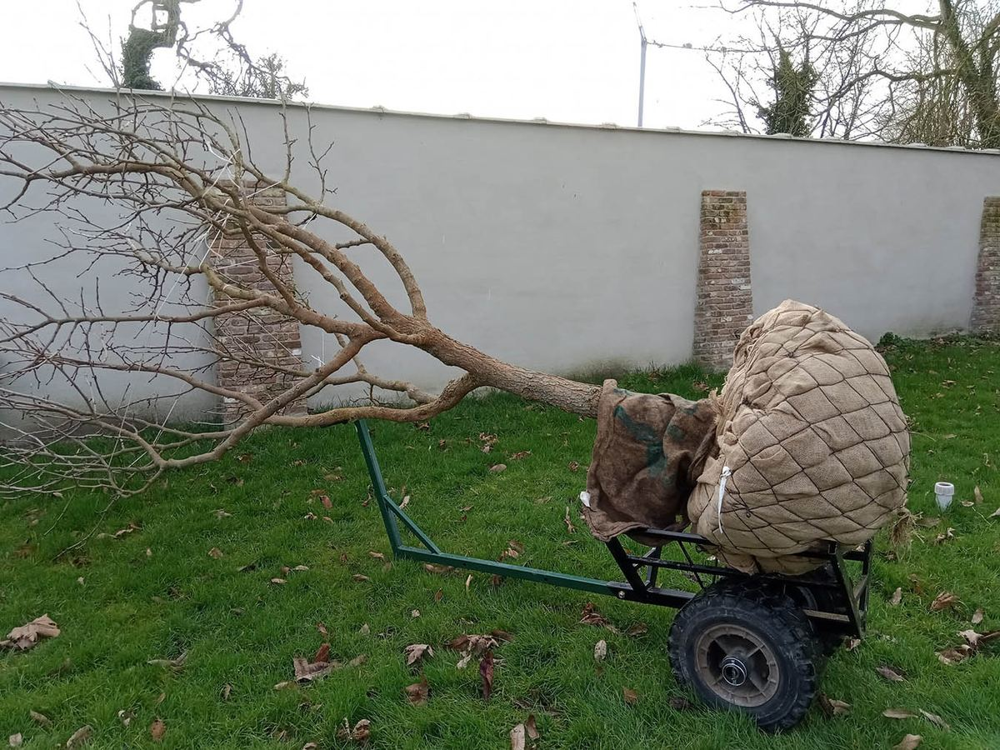
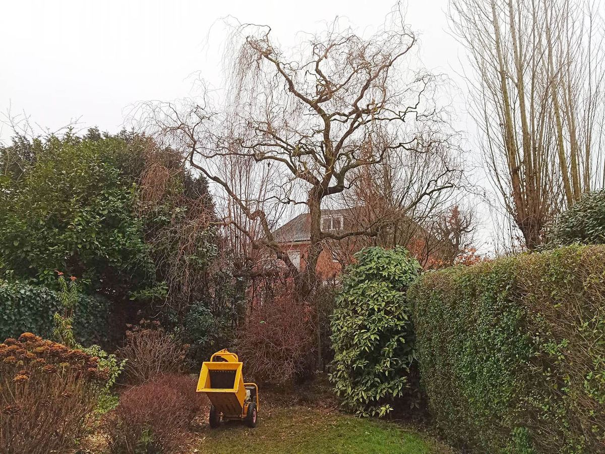
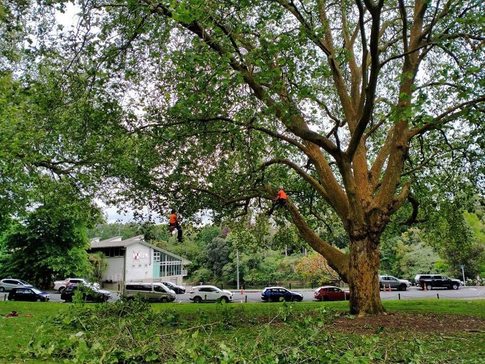
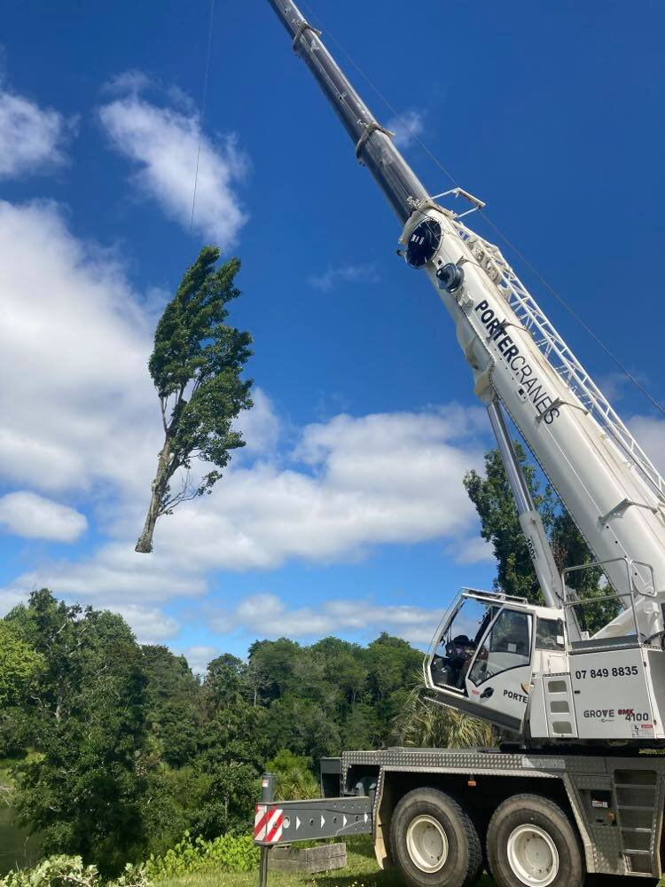
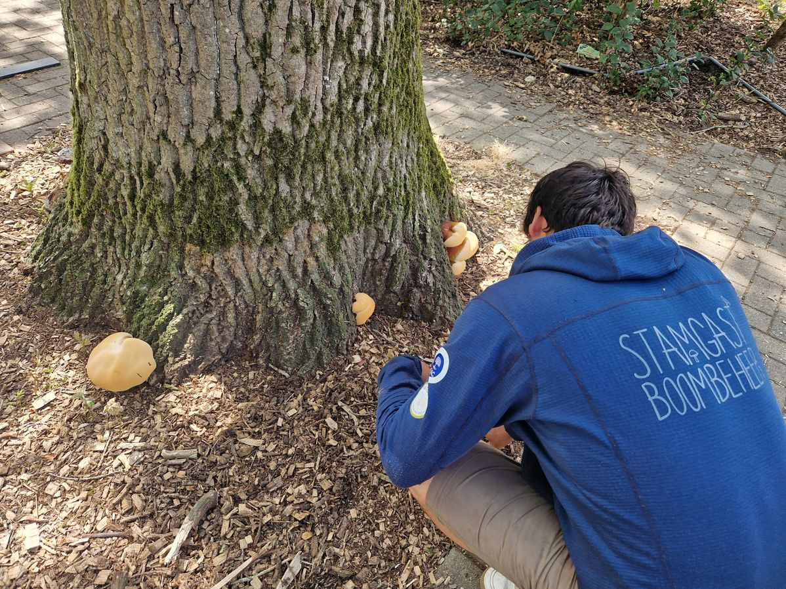
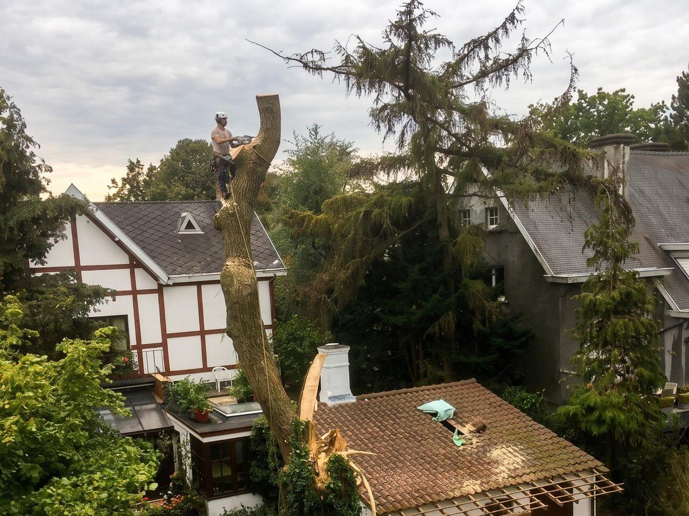
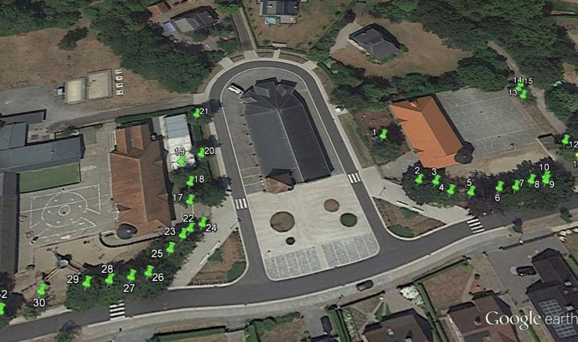
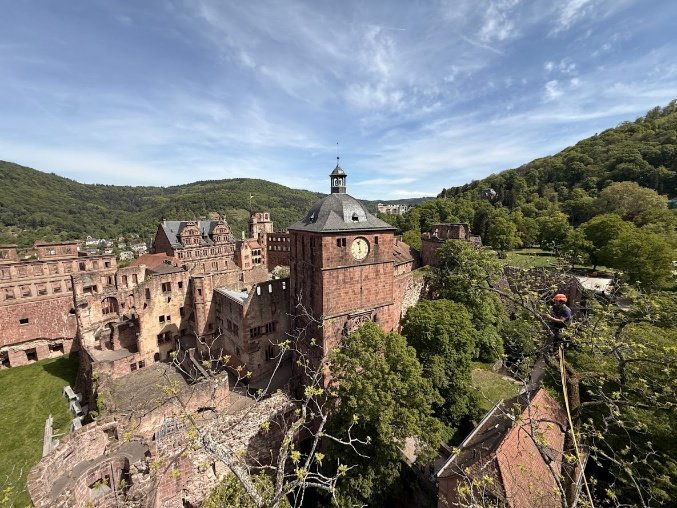
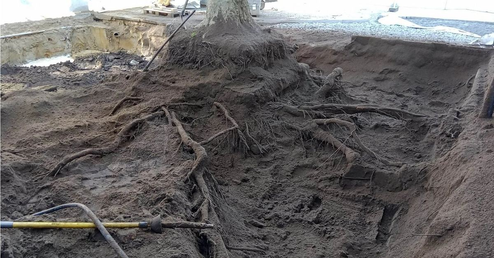

Wat klanten zeggen over Stamgast
Eerlijkheid en vakkennis worden het meest gewaardeerd. Lees wat klanten uit de regio ervaren na een samenwerking met Lode.
Een greep uit de projecten die Lode de voorbije maanden uitvoerde.









Rechtstreeks overgenomen uit Google Reviews.
"Snel gereageerd en heel correct, vriendelijk advies over de bomen in onze tuin. Op een halve dag was de klus geklaard én tuin netjes opgeruimd. Een echte vakman, aanrader!"
"Erg fijne samenwerking met Lode. Hij denkt graag met je mee, is betrouwbaar en communicatief, vraagt een eerlijke prijs en staat altijd klaar met advies. Ik zou hem absoluut aanbevelen!"
"Op de afspraak, faire prijs en echt vakmanschap!"
"Stamgast heeft knap werk verricht om onze krulwilg terug mooi in vorm te plaatsen. Fijne gast om mee samen te werken."